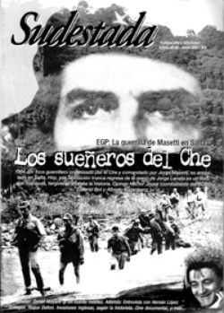

Buscar
Unos duraznos blancos y muy dulces
Por los años 42 o 43, en Alta Gracia, mi primo y yo íbamos todos los jueves a la plaza Manuel Solares, a la hora de la retreta, para vengarnos de que no nos dejaron estudiar música, que era nuestra vocación
Edición N° 59
Junio 2007
Revista bimensual
Comprar edición impresaSumario
- La guerrilla del EGP: los sueñeros del Che
- Unos duraznos blancos y muy dulces
- "Muertos de amor", o la historia como folletín grotesco
- Historias del "buen salvaje"
- Daniel Moyano: narrativa en clave de sol
- Salar de Uyuni, Bolivia
- Las invasiones inglesas según la historieta
- Hernán López Echagüe: voces del litoral
Compartir Articulo
Unos duraznos blancos y muy dulces
de Daniel Moyano
Por los años 42 o 43, en Alta Gracia, mi primo y yo íbamos todos los jueves a la plaza Manuel Solares, a la hora de la retreta, para vengarnos de que no nos dejaron estudiar música, que era nuestra vocación. La venganza consistía en llegar de golpe a las espaldas del director, un tal Ocampo, justo cuando éste levantaba la batuta para atacar la primera pieza del concierto, y eructar a dúo, lo más fuerte posible, ante el escándalo de las viejas que tejían en los bancos cerca de la pérgola y del propio Maestro, que se agarraba los pocos pelos que tenía y nos insultaba en voz baja pero concentradamente. Podíamos eructar a voluntad tragando aire primero y soltándolo luego con distintas aberturas de boca, regulando intensidad y altura según nuestras intenciones. Una manera como cualquier otra de hacer música, en este caso de percusión.
Un poco más arriba, y cerca del Sierras Hotel, vivían los padres de un compañero de colegio, físicamente muy ágil, que se llamaba Ernesto y era asmático, y más o menos siguiendo la misma dirección pero hacía la izquierda, en un chalet que se llamaba Los Espinillos, un viejo cascarrabias, flaco y calvo, que se pasaba los días y las noches componiendo música. La misma que nos negaban a nosotros, por no tener piano, por ser muy pobres o malditos, qué sé yo; el hecho es que cuando aparecimos por el Conservatorio y nos vieron la pinta, una mujer alta y barbuda levantó un dedo índice que, por las palabras que lo acompañaban, en cualquier momento se transformaba en un garrote, y nos señaló la puerta de calle. Retírense de aquí inmediatamente, decía la boca de la vieja, ayudada por el dedo índice que se agitaba enorme por encima de su cabeza.
Lo que pasa es que tanto mi primo como yo éramos conocidos en el pueblo por andar recogiendo las sobras de los platitos en los bares, los higos que caían por encima de la tapia desde el interior de una finca a la vereda, cualquier cosa comestible que alguien dejara por ahí o simplemente se le cayera. No nos dejaban entrar ni en el cine ni en los bares, salgan de aquí malditos pedigüeños, nos decían en las fiestas de bautismo o casamiento, y en las kermeses y en los circos que venían de vez en cuando nos toleraban hasta que nos conocían.
Por eso siempre andábamos, mi primo y yo, por las orillas de las cosas, nunca en su centro, nunca mirándolas de frente. Vivíamos de soslayo. Y nos miraban del mismo modo. Eructábamos los conciertos del maestro Ocampo para que al menos para corrernos o amenazarnos con llamar a la policía, nos miraran de frente. Y sobre todo porque nos divertía.
A veces el maestro, antes de comenzar, echaba una mirada alrededor y viendo que no estábamos atacaba inmediatamente sin darnos tiempo para la sorpresa, casi siempre alguna cosa de Rossini o Von Suppé. Como conocíamos las obras de memoria, aparecíamos unos segundos antes de algún silencio significativo en la partitura y se lo eructábamos todo, tantas veces como tiempos tuviera el compás. Esto provocaba automáticamente un cacareo de viejas (que aprovechábamos para escapar), golpes de batuta sobre el atril interrumpiendo la ejecución, y el inmediato da capo que el director ordenaba pronunciando letra por letra, dándoles la entonación de un conocido insulto. Y claro, con esos antecedentes era normal que la barbuda nos echara del Conservatorio.
Y esa vida a los saltos y ese andar siempre por las orillas comenzó cuando terminamos el curso de solfeo para entrar en la Banda Municipal, pero tuvimos que dejar porque no alcanzaban los instrumentos donados por el Círculo de Damas. Yo le había echado el ojo a un flicorno tenor y mi primo a un requinto que era una delicia, pero el maestro Ocampo prefirió entregarlos a los alumnos que habían obtenido mejores calificaciones que nosotros.
Por eso le eructábamos los conciertos al viejo maldito.
Parece que mi primo y yo le caímos bien a Ernesto, que una vez nos invitó a su casa, enorme y hermosa, en lo alto del pueblo, a tomar el té como si fuéramos niños educados. Había oído hablar de nuestras perrerías al maestro Ocampo, y nos pidió que eructáramos. Pero no nos animamos porque teníamos vergüenza de su padre, que se llamaba Ernesto como él.
La última vez que lo vimos fue aquel verano que con mi primo planeamos un robo en el chalet del viejo calvo. Había un duraznero en su jardín, de esos duraznos blancos y tan dulces, que cuando maduran son rosáceos por fuera pero por dentro enteramente blancos y jugosos. Sabíamos a qué horas el viejo componía y a qué horas dormía la siesta, y a qué hora una mujer que lo cuidaba y que era su hermana se recostaba en un sillón a cabecear unos minutos.
Ese día dijo mi primo:
-Podríamos invitarlo a Ernesto, ¿no?
Serían como las tres de la tarde cuando nos reunimos. Íbamos los tres subiendo la cuesta, oyendo los sonidos de la siesta en el monte, mejor dicho ese silencio donde solamente se oye el canto de las torcazas que viene muy de lejos, como del otro lado de la sierra.
-Che -dijo de pronto Ernesto-, cómo es ese asunto de los eructos.
En cuanto empezamos a probar, que era como afinar, Ernesto soltó una carcajada.
Dominábamos tanto esa forma (tan válida como cualquier otra, pienso yo) de emitir sonidos, que eran prácticamente nuestras notas, nuestra forma de cantar. Teníamos a medio ensayar un duetto precioso, donde una de las voces intentaba ser una melodía y la otra hacía un acompañamiento de pura percusión.
Justo cuando estábamos empezándolo, el chalet del viejo se nos apareció de golpe, al fondo una ventana alta, en primer plano los duraznos a punto de descolgarse de las ramas, de tanto que los había madurado el sol y, según decían, el canto de las chicharras.
Tendimos el oído a ver si como siempre estaba sonando el piano, pero nada, el viejo seguramente dormía. Nos metimos las puntas de las camisas dentro de los pantalones, embolsándolas un poco, para guardar allí el producto de la expropiación, y saltamos la verja.
Cortábamos y guardábamos, pero al mismo tiempo comíamos. Pronto desaparecieron los de abajo y hubo que trepar, che, no suban todos a la vez que el árbol es muy débil. Hasta que quedó un solo durazno allá en la punta inalcanzable, desparramando aroma y jugo.
-Vamos -ordenó Ernesto en voz baja-, parece que el viejo se está levantando.
Pero yo ni me moví, mirando el ejemplar de allá arriba, el más grande de todos, enorme, más que un durazno era un faisán, un melón lleno de miel, una joya sacada del fondo de una gruta.
Entre los tres empezamos a sacudir el árbol hasta conseguir el balanceo violento capaz de producir el desprendimiento de la fruta. Caían hojas y pequeñas ramas, duraznos medio secos que no habíamos visto o habíamos desechado, bichos cascarudos y un esqueleto de chicharra.
La percepción del olor intenso de las hojas cortadas llegó junto con el ruido de la ventana que se abría dando paso a esa cara espectral extraída del fondo de la siesta, y a sus palabras:
-Llevaos la fruta pero no rompáis el árbol.
Después de comer sólo los muy maduros,
guardar los que estaban a punto y tirar al río los muy verdes, mi primo y yo quisimos hacer el reparto. Ernesto dijo que si él llegaba con duraznos a la casa tendría que dar explicaciones muy serias, de modo que nos cedió su parte. Nuestros padres y tíos, en cambio, se alegrarían de que lleváramos comestibles, y más que ellos nuestros hermanos y primos más pequeños.
Al atardecer estábamos sentados en el murallón del Tajamar, enfrente de la casa del virrey Liniers.
Ernesto dijo:
-Al final no cantaron el dúo. ¿Cómo era?
-Bueno, cantar es un decir. Lo nuestro es más bien un juego o una burla.
-Eso no importa. Dale, canten.
Afinamos otra vez (creo que afinar era lo más gracioso, por las caras que poníamos, imitando al maestro Ocampo), pero no cantamos el dúo. Dejándonos llevar por la afinación, que nos salió perfecta, le «eructonamos» unas especies de modulaciones mozartianas, suavísimas y dulces como los duraznos blancos, y Ernesto no paró de reír y de reír.
Dicen que el viejo de los duraznos era español. Había tenido que huir de su tierra, pero como no se resignaba a vivir fuera de día tenía dos relojes, uno para la hora de acá, otro para la de allá, a los que daba cuerda todas las noches a fin de que no se le paralizara su patria lejana, ni tampoco ésta que le habían prestado. Lo más importante era no perder la diferencia horaria, para que, aunque muy a la distancia, el país que dejó se mantuviera presente en el tiempo de todos los días.
Y parece que alguien que ignoraba la importancia de ese rito llegó un día a la casa y sin que nadie se diera cuenta puso los relojes en la misma hora, y dicen que en ese mismo momento el viejo se despidió para siempre de la música y de Alta Gracia y de su tierra, porque pocos días después encerrado en una caja oscura lo llevaron por el mar hasta su tierra donde duerme todos los silencios musicales justos.
Mi primo y yo y otros chicos que ya tocaban en la Banda merodeamos por la casa el día de su muerte, pensando que si en vez de robarle los duraznos le hubiésemos pedido que nos enseñase un poco de música acaso él hubiese aceptado. Y nos entraba la lástima y teníamos remordimientos.
El viejo se me apareció de golpe años después, en su tierra. Yo llevaba un tiempo en España, y una tarde estaba tomando tranquilamente una cerveza cuando en eso pago y me dan el vuelto y lo veo aparecer flaco y calvo como siempre, enmarcado por el contorno de un billete de cien pesetas, que hacía las veces de aquella ventana de su casa de Alta Gracia donde se asomó para decirnos que no le rompiéramos el árbol.
Con nuestro cómplice en el robo de la fruta me reencontré después de mucha vida. El encuentro tuvo lugar en las páginas de un semanario, mejor dicho en una fotografía tomada durante una nevada en Alta Gracia, que mi memoria retenía.
La revista, en un número súper extra, la publicaba para ilustrar la Infancia del que yacía en la foto de la portada, rematado a tiros en un pueblo boliviano llamado Ñancaaguazú. Se me saltaron las lágrimas al ver en qué estado había quedado el niño que yo conocí.
Para atenuarlas, recordando una vieja mala costumbre, le dediqué un hermoso eructo modulado, agudo, mozartiano, como quien intenta provocarle una sonrisa.
http://www.revistasudestada.com.ar/articulo/401/daniel-moyano-narrativa-en-clave-de-sol/
Comentarios

Sudestada
El colectivo de Revista Sudestada esta integrado por Ignacio Portela, Hugo Montero, Walter Marini, Leandro Albani, Martín Latorraca, Pablo Fernández y Repo Bandini.
Articulos más vistos


LIBRERÍA SUDESTADA

Colección infantil

Distribuidora de Libros

Suscripción

Sudestada en URUGUAY

Otros articulos de esta edición
Las invasiones inglesas según la historieta
La Unión de Historietistas e Ilustradores de Tucumán (unhil), cultores de la historieta histórica como símbolo de identidad y herramienta ...
 Material exclusivo para la web
Material exclusivo para la web
"Muertos de amor", o la historia como folletín grotesco
JORGE LANATA y "Muertos de amor"
 Nota de tapa
Nota de tapa
La guerrilla del EGP: los sueñeros del Che
Silencio, olvido, mentira. La historia del EGP permaneció durante décadas oculta en las entrañas de la tierra. Comandado por Jorge ...
 Dossier
Dossier
Daniel Moyano: narrativa en clave de sol
Músico de alma, escritor por las noches, plomero o albañil cuando fuese necesario, todos y cada uno de esos personajes ...
 Entrevista
Entrevista
Hernán López Echagüe: voces del litoral
Crónica del ocaso: Apuntes sobre las papeleras y la devastación del litoral argentino y uruguayo, es el nuevo libro de ...
 Crónica viajera
Crónica viajera
Salar de Uyuni, Bolivia
En Uyuni, Bolivia, cielo y tierra se confunden en un horizonte único. A más de 3.600 metros de altura, se ...